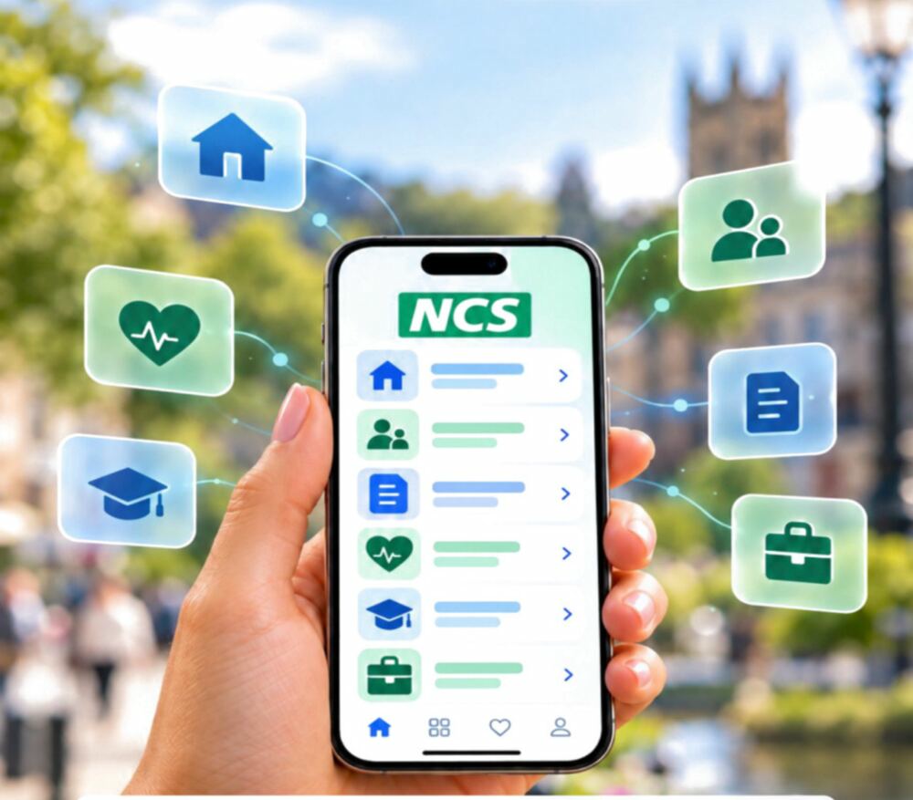
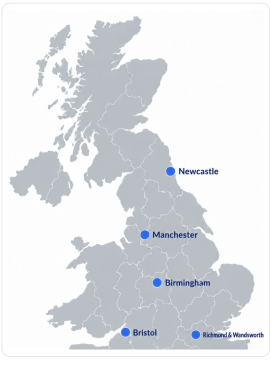

Appointments, decisions and outstanding actions in one place.
The pilot · What we want to test
One app. One shared picture.

100 family partnerships5 proposed locations6 months of supported use
We propose giving 100 consenting family partnerships access to a National Care Service beta app, backed by a named coordinator and participating local services. The aim is simple: let families focus on caring while services connect the dots.
National CareService
AG
Good morning
Here is the shared picture for today.
TodayPeopleDecisions
Today’s priorities
Housing decision needs actionEvidence received · response overdue
Owner: HousingMedication review confirmedTuesday · 10:30 · video appointment
NHSCollege referral progressingHandover accepted by learning team
EducationSuccessful handover
Social care → Employment supportNamed responsibility acceptedHandover recorded
What families would use
Know what’s happening.
Know who’s responsible.
A simple front door for the carer and caree: the same shared picture of support, decisions and next steps, with information shared according to agreed permissions.
Make responsibility visible and show whether a handover has been accepted.
A coordinator follows up unresolved actions with the services involved.
This is an illustrative app concept. The pilot would require a working, secure beta and agreements with participating services; those connections are not yet in place.
Explore the app conceptWhere we propose to test it
Five locations.
One hundred family partnerships.

Twenty family partnerships in each proposed location, testing the same principles in different local settings.
- Newcastle20 partnerships
- Manchester20 partnerships
- Birmingham20 partnerships
- Bristol20 partnerships
- Richmond & Wandsworth20 partnerships
These are proposed locations. Participation would need to be agreed with families and local partners.
How we propose to test it
Start small. Support people.
Measure what changes.
01 · Build with families
Co-design the beta with carers, carees and professionals. Agree goals, accessibility needs, consent and information-sharing permissions before use.
02 · Put support behind the screen
Train the professionals already supporting participating families in one shared Connecting The Dots method: a shared picture, named responsibility, accepted handovers and clear escalation. Agree responsibilities with services, appoint named coordinators and prepare a secure beta before using real family information. Keep telephone and human support available.
03 · Test for six months
Support 20 family partnerships in each location. Connect, measure, learn, adapt and repeat. Track delays, accepted handovers, unresolved actions and the time families spend chasing support; use feedback to improve the beta throughout the six months.
04 · Evaluate the whole picture
Compare outcomes and full costs with an agreed baseline or suitable comparison group. Assess independence, wellbeing and progress towards employment, training or education where wanted and appropriate. Test potential savings and public value rather than assume them.
A positive result would support a larger test. The question is whether a shared picture and clear responsibility improve lives—and whether those improvements can become self-funding.
Return to Connecting The Dots